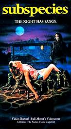

|  |
. Earlier in the century relations with Byzantium had often been strained, largely due to repeated wars over Dalmatia. There were also frequent tensions with Hungary's powerful western neighbours, the Hohenstaufen Emperors (in particular Frederic I Barbarossa), Hungary repeatedly siding with the Papacy in its struggle - then at its peak - with the Empire. Every so often a younger brother of the King, and on one occasion the uncles of a boy-King, sought the backing of one or the other of these neighbours in attempts to obtain the throne, but none managed to displace the rightful incumbent. Crusading armies, taking the comfortable land route down the Danube to the Levant, kept passing through Hungary. |
|
The Treaty of Karlowitz also secured Transylvania to the Habsburgs. . Following the capture of Buda, on September 10, 1526, Suleiman withdrew from Hungary. In the course of the struggle for control of Hungary, Transylvania became the center of the Magyar movement against Turkish and Austrian, or Habsburg, domination. The Magyars had abandoned the Catholic church during the Reformation, thereby aggravating the enmity of the Habsburgs. |